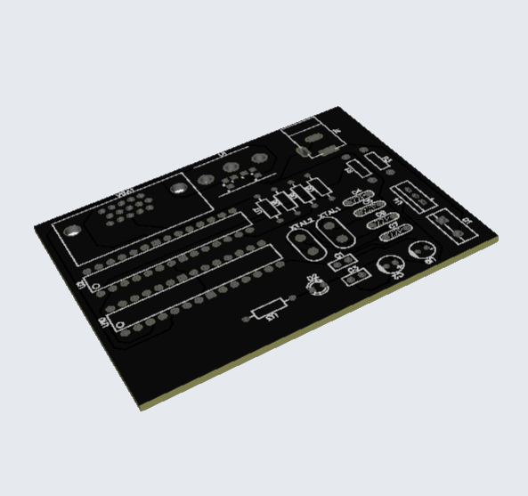
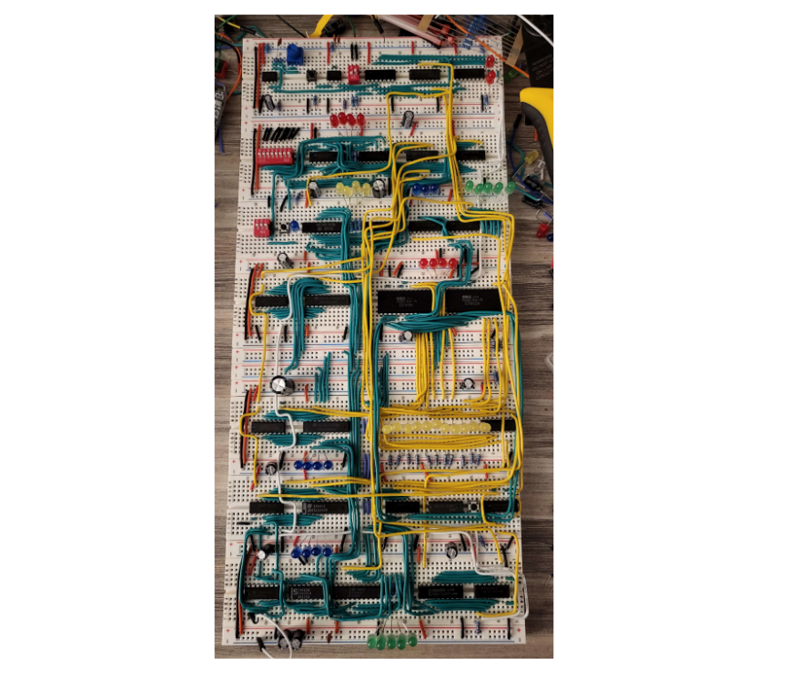
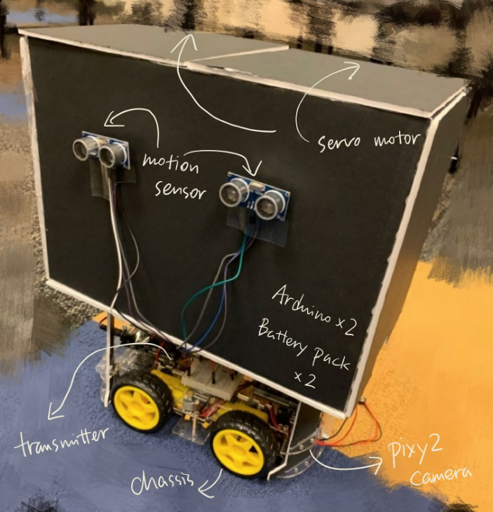
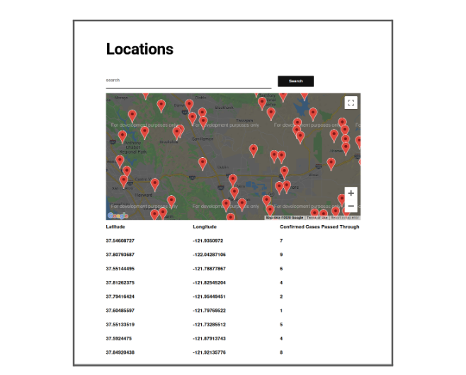
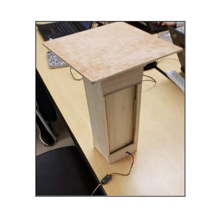

Hello! I am Hae Chan Park, an aspiring hardware engineer with an interest in robotics, digital logic, and coding.
Hello there! I am Hae Chan Park, a sophomore at the University of California, Santa Barbara studying Electrical Engineering. Within the broad practice of Electrical Engineering, I am especially passionate about PCB design, computer architecture, FPGAs, and other applications of digital logic. I find the world of technology extraordinarily fascinating to me, and I anticipate pursuing a career in hardware engineering following the end of my university education. However, on top of the technical aspects of engineering, I also love writing and speaking about it through documentation or personal research.
As a student and a prospective engineer, I am akin to rigorous work and advanced topics. However, I also enjoy other extracurricular activities as I personally believe that they bring out personality. I love working out, playing tennis, and practicing the violin. Tinkering with electronics and retrocomputing are also hobbies that I invest much of my time in, especially recently.

Rudimentary 8-bit functional computer that runs a version of Basic through the usage of two ATmega328PU chips. Utilizes PS/2 and VGA ports for input and output respectively. Currently in progress of manufacturing and soldering components for the PCB.
Documentation in Progress

A 4-bit breadboard processor built from various 7400 series TTL chips and other relevant components. Designed to learn more about computer architecture and digital logic design. Possesses 16 programmable addresses and can compute and store basic operations. Inspired by Ben Eater.

An Arduino-based robot designed to prevent littering and environmental damage through its mobile capabilities as a trash bin. Utilizes radio and camera modules to allow for accurate movement to high concentration trash locations.

Designed for the 2020 Entrepreneurship Project hosted at Dublin High. The product is made to make the lives of people safer using a virus tracker application and system in light of the COVID-19 Pandemic.

Designed for the 2019 Entrepreneurship Project hosted at Dublin High, Squarefold is an innovative solution to resolve the growing issue of space in urban areas. This project won 1st place in its respective class.
If you want to contact me, feel free to hit me up with an email at kevinparkdhs@gmail.com!